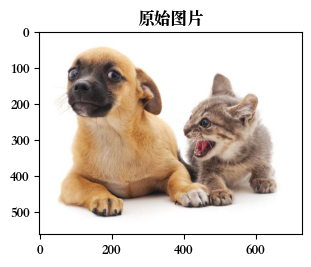
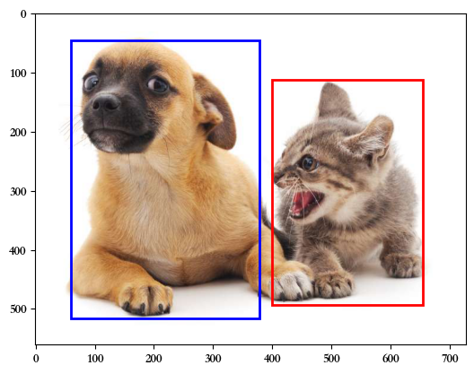

目标检测和边界框#
目标检测在多个领域中被广泛使用。 例如，在无人驾驶里，我们需要通过识别拍摄到的视频图像里的车辆、行人、道路和障碍物的位置来规划行进线路。 机器人也常通过该任务来检测感兴趣的目标。安防领域则需要检测异常目标，如歹徒或者炸弹。
%matplotlib inline
import torch
from d2l import torch as d2l
import numpy as np
from torchvision import transforms
from torchvision.io import read_image
import matplotlib as mpl
import matplotlib.pyplot as plt
from PIL import Image
import matplotlib.pyplot as plt
import matplotlib.patches as patches
#mpl.rcParams['font.sans-serif'] = ['SimHei'] # 中文字体支持
mpl.rcParams['font.sans-serif'] = ['Songti SC'] # macOS中文字体支持
def show_image(img_lst, **imshow_kwargs):
"""
img_lst: 保存图像和标题的list，形如：[(image1, title1),(image2, title2)]。image可以使Pillow.Image对象，也可以是torch.Tensor。
imshow_kwargs: 需要传递给plt.imshow的参数
"""
fig, axs =plt.subplots(1,len(img_lst), constrained_layout=True, figsize=(3*len(img_lst),3), squeeze=False)
for i, (img, title) in enumerate(img_lst):
if isinstance(img, torch.Tensor): # 如果是torch.Tensor类型，就必须转换成Pillow.Image类型，才能进行展示
img = transforms.ToPILImage()(img)
axs[0, i].imshow(np.asarray(img), **imshow_kwargs)
# axs[0, i].set(xticklabels=[], yticklabels=[], xticks=[], yticks=[])
axs[0, i].set_title(title)
plt.show()
下面加载本节将使用的示例图像。可以看到图像左边是一只狗，右边是一只猫。 它们是这张图像里的两个主要目标。
raw_img = (Image.open('../image/ComputerVision/catdog.jpg'), '原始图片')
show_image([raw_img])

边界框#
在目标检测中，我们通常使用边界框（bounding box）来描述对象的空间位置。 边界框是矩形的，由矩形左上角的以及右下角的\(x\)和\(y\)坐标决定。 另一种常用的边界框表示方法是边界框中心的\((x, y)\)轴坐标以及框的宽度和高度。
在这里，我们定义在这两种表示法之间进行转换的函数：box_corner_to_center从两角表示法转换为中心宽度表示法，而box_center_to_corner反之亦然。
输入参数boxes可以是长度为4的张量，也可以是形状为（\(n\)，4）的二维张量，其中\(n\)是边界框的数量。
def box_corner_to_center(boxes): #该函数将边界框的表示从 (x1, y1, x2, y2) 转换为 (cx, cy, w, h)
"""从（左上，右下）转换到（中间，宽度，高度）"""
# x1, y1 是左上角的坐标，x2, y2 是右下角的坐标。
x1, y1, x2, y2 = boxes[:, 0], boxes[:, 1], boxes[:, 2], boxes[:, 3]
# cx和cy是中心坐标
cx = (x1 + x2) / 2
cy = (y1 + y2) / 2
w = x2 - x1
h = y2 - y1
boxes = torch.stack((cx, cy, w, h), axis=-1) # 将这些值组合成形状为 (n, 4) 的张量并返回。
return boxes
def box_center_to_corner(boxes):
"""从（中间，宽度，高度）转换到（左上，右下）"""
cx, cy, w, h = boxes[:, 0], boxes[:, 1], boxes[:, 2], boxes[:, 3]
x1 = cx - 0.5 * w
y1 = cy - 0.5 * h
x2 = cx + 0.5 * w
y2 = cy + 0.5 * h
boxes = torch.stack((x1, y1, x2, y2), axis=-1)
return boxes
我们将根据坐标信息定义图像中狗和猫的边界框。 图像中坐标的原点是图像的左上角，向右的方向为\(x\)轴的正方向，向下的方向为\(y\)轴的正方向。
# bbox是边界框的英文缩写
dog_bbox, cat_bbox = [60.0, 45.0, 378.0, 516.0], [400.0, 112.0, 655.0, 493.0]
我们可以通过转换两次来验证边界框转换函数的正确性。
boxes = torch.tensor((dog_bbox, cat_bbox))
print(boxes)
box_center_to_corner(box_corner_to_center(boxes)) == boxes
tensor([[ 60., 45., 378., 516.],
[400., 112., 655., 493.]])
tensor([[True, True, True, True],
[True, True, True, True]])
我们可以将边界框在图中画出，以检查其是否准确。
画之前，我们定义一个辅助函数bbox_to_rect。
它将边界框表示成matplotlib的边界框格式。
def bbox_to_rect(bbox, color):
# 将边界框(左上x,左上y,右下x,右下y)格式转换成matplotlib格式：
# ((左上x,左上y),宽,高)
return patches.Rectangle(
xy=(bbox[0], bbox[1]), width=bbox[2]-bbox[0], height=bbox[3]-bbox[1],
fill=False, edgecolor=color, linewidth=2)
在图像上添加边界框之后，我们可以看到两个物体的主要轮廓基本上在两个框内。
# fig = d2l.plt.imshow()
# fig.axes.add_patch(bbox_to_rect(dog_bbox, 'blue'))
# fig.axes.add_patch(bbox_to_rect(cat_bbox, 'red'))
# 显示图像
fig, ax = plt.subplots()
ax.imshow(Image.open('../image/ComputerVision/catdog.jpg'))
# 添加边界框
ax.add_patch(bbox_to_rect(dog_bbox, 'blue')) # 蓝色的狗边界框
ax.add_patch(bbox_to_rect(cat_bbox, 'red')) # 红色的猫边界框
# 显示
plt.show()
